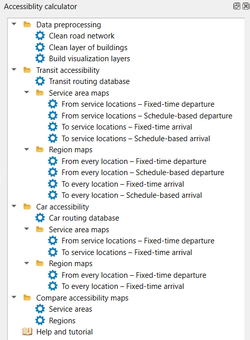
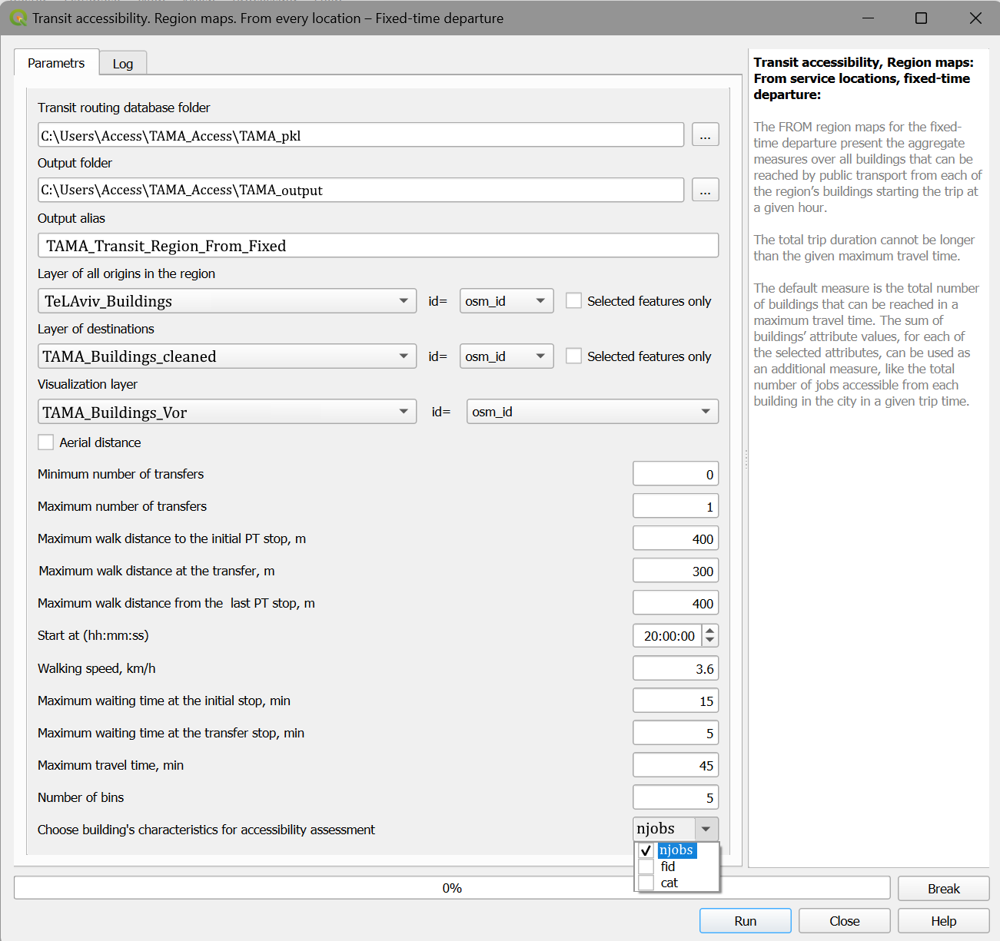
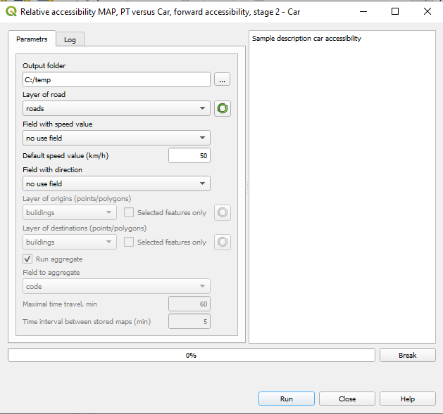
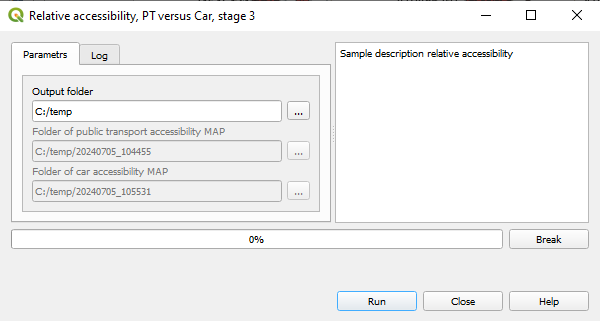

Relative accessibility, PT versus Car: Forward/backward accessibility
Предварительная подготовка
Необходимо предварительно подготовить данные:
GTFS словарь (Смотрите раздел loading_data)
слой дорог
слой зданий
Слой дорог и слой зданий должны быть загружены в текущий проект QGIS.
Вычисление
Открыть плагин и выбрать пункт меню
Для режима Forward accessibility
Relative accessibility, PT versus Car -> Forward accessibility
Для режима Backward accessibility
Relative accessibility, PT versus Car -> Backward accessibility
Откроется диалоговое окно настроек параметров PT accessibility.
В окне настроек необходимо указать параметры в соответствии с разделом.
Нажмите кнопку Run для запуска алгоритма.
После завершения вычислений появится кнопка - Close and сalc Car accessibility
Необходимо нажать кнопку для выполнения следующего этапа вычислений.
Откроется диалоговое окно настроек параметров Car accessibility.
В окне настроек необходимо указать параметры в соответствии с данным разделом.
Параметры расчета, которые должны быть идентичны параметрам расчета PT accessibility, заблокированы для изменений.
Нажмите кнопку Run для запуска алгоритма.
После завершения вычислений появится кнопка - Close and сalc relative PT versus Car
Необходимо нажать кнопку для выполнения следующего этапа вычислений.
Откроется диалоговое окно настроек параметров Relative accessibility.
Пути к катологам с протоколами PT accessibility и Car accessibility установлены на основе предущих этапов алгоритма.
Нажмите кнопку Run для запуска алгоритма и формирования итогового протокола.
Структура протокола
Attribute |
Value |
|---|---|
Source_ID |
|
Time_interval_PTn |
|
Time_interval_Carn |
|
Time_interval_PTn / Time_interval_Carn |
|
Value_aggr_PTn |
|
Value_aggr_Carn |
|
Value_aggr_PTn / Value_aggr_Carn |